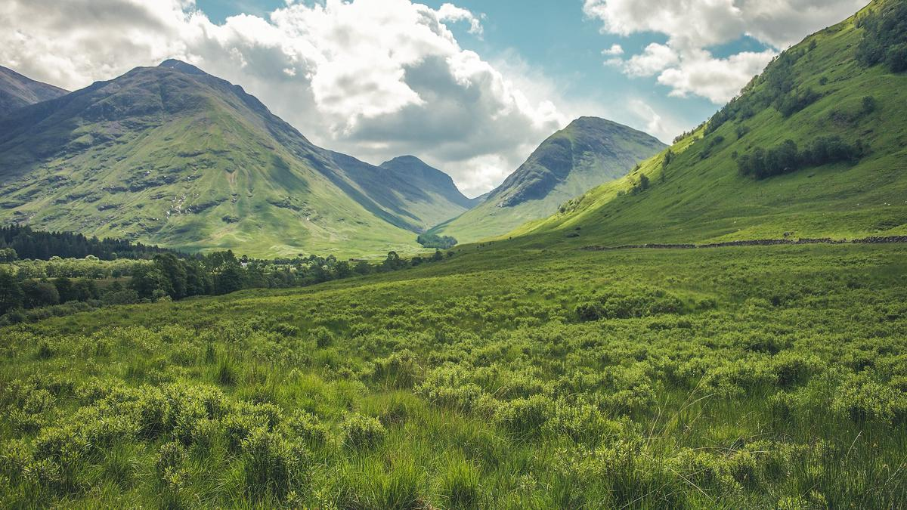

Penjelasan Umum
Bioma padang rumput merupakan wilayah luas yang didominasi oleh rerumputan dan hanya sedikit pohon. Bioma ini banyak ditemukan di Afrika, Amerika, dan Australia. Padang rumput menjadi habitat penting bagi hewan herbivora dan predator besar. Curah hujan di wilayah ini cukup untuk pertumbuhan rumput, tetapi tidak cukup untuk pertumbuhan hutan lebat. Padang rumput memiliki peran penting dalam rantai makanan dan keseimbangan ekosistem.
Ciri-Ciri Bioma
- Didominasi oleh rumput dan semak kecil
- Pohon tumbuh jarang
- Curah hujan sedang
- Memiliki musim kemarau dan musim hujan
- Banyak dihuni hewan herbivora besar
Jenis Bioma
- Stepa
- Savana
- Prairie
Flora dan Fauna
Flora padang rumput terdiri dari ilalang, rumput liar, dan semak kecil. Fauna khas bioma ini meliputi zebra, singa, bison, rusa, gajah, dan cheetah. Banyak hewan hidup berkelompok untuk bertahan dari predator.